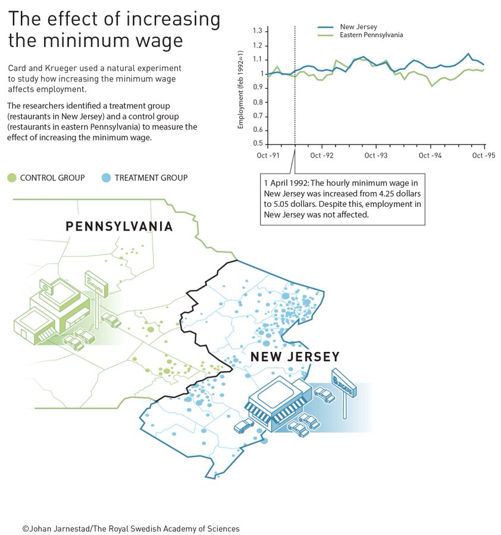

06:00
Difference-in-Differences
Data Analytics and Visualization with R
Session 12
Intro
Quiz
You need to explore if women are more likely to quit politics after losing their first race than men. Discuss the following research design choices.
What candidates should be included in the sample? (e.g., only those who lost the election once? only those who decided to quit politics?)
What would be the unit of analysis?
What model would you use? Why?
Closing Backdoors
Model-based vs. Design-based Identification
- Option 1: Do our best to measure all confounding variables (and assume we did if that’s plausible): regression, matching, IPW
- Option 2: Make comparisons within units with repeated measures of same units, thus controlling for unobserved things that stay constant in units over time: fixed effects
- Option 3: Look for quasi-experiments (as-if random assignment)
- Difference-in-difference
- Regression discontinuity design
Each Method Has Pros and Cons

Natural Experiments (aka Quasi-Experiments)
- Situation in which there is random assignment of a treatment via a randomization device, but this assignment is not under the control of the researcher
- Randomization may be imperfect, but external validity is high
- How did Vietnam draft vulnerability influence political attitudes?
- The 1969 Vietnam draft lottery assigned numbers to birth dates in order to determine which young men would be called to fight in Vietnam (Erikson and Stoker 2011)
- Do people continue to elect women after quotas are lifted?
- One third of seats to women candidates in India’s local elections are randomly reserved and change from one election to the next (Bhavnani 2009)
Recap: Interactions
\[ \widehat{\text{Running for Office}} = \hat\beta_0 + \hat\beta_1 \text{Losing Elections} + \hat\beta_2 \text{Female} +\\ \hat\beta_3 (\text{Losing Elections} \times \text{Female}) \]
- The effect of Losing Elections on running for office is allowed to be different for Men vs. Women
- Different intercepts + different slopes
Diff-in-Diff
What is Difference-In-Differences
- We want to know the effect of some policy
- We look for cities/states/countries/etc. which implemented it and measure the outcome before and after the policy implementation (difference #1)
- These before and after comparisons would include the effect of policy but also other stuff that changes over time
- We find units that did not introduce the policy (which are similar to the “treated” one) and use them as controls: compare them for the same pre- and post-treatment times (difference #2)
- We then compare the changes in outcome for cases where policy was implemented (difference #1) to changes for control (difference #2) \(\Rightarrow\) Difference-in-differences
Diff-in-Diff Illustration

DAG for Diff-in-Diff
Example: Minimum Wage and Unemployment


Card & Krueger Study DAG
- New Jersey raised their minimum wage in early 1992 ($4.25 → $5.05), but Pennsylvania didn’t
- Outcome variable: Average number of jobs per fast food restaurant in January 1992 and November 1992
Outcome Matrix
| Pre mean | Post mean | ∆ (post − pre) | |
|---|---|---|---|
| Control | A (never treated) |
B (never treated) |
B − A |
| Treatment | C (not yet treated) |
D (treated) |
D − C |
| ∆ (treatment − control) |
C − A | D − B | (B − A) − (D − C) or (B − D) − (A − C) |
Outcome Matrix: ∆within units
| Pre mean | Post mean | ∆ (post − pre) | |
|---|---|---|---|
| Control | A (never treated) |
B (never treated) |
B − A |
| Treatment | C (not yet treated) |
D (treated) |
D − C |
| ∆ (treatment − control) |
A − C | B − D | (B − A) − (D − C) or (B − D) − (A − C) |
Outcome Matrix: ∆within groups
| Pre mean | Post mean | ∆ (post − pre) | |
|---|---|---|---|
| Control | A (never treated) |
B (never treated) |
B − A |
| Treatment | C (not yet treated) |
D (treated) |
D − C |
| ∆ (treatment − control) |
C − A | D − B | (B − A) − (D − C) or (B − D) − (A − C) |
Problems
- Comparing only before/after ∆within units
- You’re only looking at the treatment or control group separately
- Impossible to know if change happened because of treatment or just naturally
- Comparing only treatment/control ∆within groups
- You’re only looking at post-treatment values across treatment & control
- Impossible to know if change happened because of natural growth
Outcome Matrix: ∆within units − ∆within groups
| Pre mean | Post mean | ∆ (post − pre) | |
|---|---|---|---|
| Control | A (never treated) |
B (never treated) |
B − A |
| Treatment | C (not yet treated) |
D (treated) |
D − C |
| ∆ (treatment − control) |
C − A | D − B | (D − C) − (B − A) or (D − B) − (C − A) |
Minimum Wage and Unemployment Diff-in-Diff
| Pre mean | Post mean | ∆ (post − pre) | |
|---|---|---|---|
| Pennsylvania | 23.33 A |
21.17 B |
-2.16 B − A |
| New Jersey | 20.44 C |
21.03 D |
0.59 D − C |
| ∆ (NJ − PA) |
-2.89 C − A |
-0.14 D − B |
(0.59) − (−2.16) = 2.75 |
Diff-in-Diff with Regression
\[\begin{aligned} \color{#440154FF}{Y_{it}}\ =\ &\alpha + \beta\ \color{#35608DFF}{\text{Group}_i} + \gamma\ \color{#22A884FF}{\text{Time}_t} + \delta\ \color{#800010}{(\text{Group}_i \times \text{Time}_t)} + \varepsilon_{it} \end{aligned}\]
α = Mean of control, pre-treatment
β = Increase in outcome across groups
γ = Increase in outcome over time within units
δ = Difference in differences!
| Pre mean | Post mean | ∆ (post − pre) | |
|---|---|---|---|
| Control | α | α + γ | γ |
| Treatment | α + β | α + β + γ + δ | γ + δ |
| ∆ (trtmt − ctrl) | β | β + δ | δ |
Parallel Trend Assumption
- Treatment and control groups might have different values at first, but we assume that the treatment group would have changed like the control group in the absence of treatment
- We are assuming is that Time affected the Treatment and Control groups equally
- Otherwise, our attempt to control for Time by using how it changed in Control won’t work
- We can test it if there is data available for before treatment
Parallel Trend Assumption

Parallel Trend Assumption Violation

Parallel Trend Assumption Violation

Parallel Trend Assumption Holds